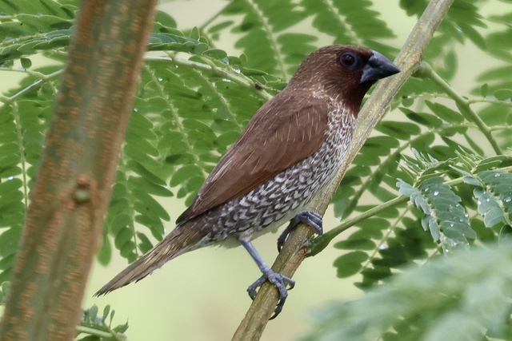
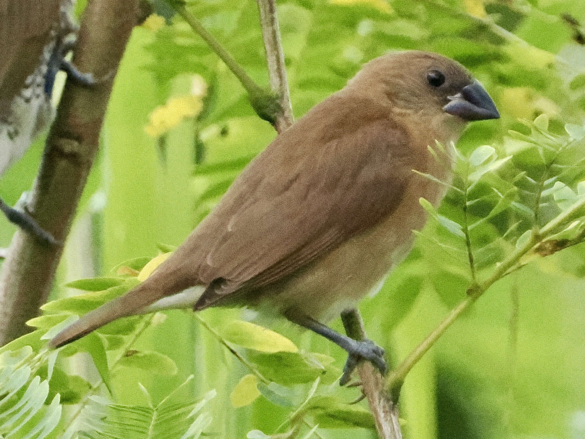

Scaly-Breasted Munia
Lonchura punctulata
Order: Passeriformes
Family: Estrildidae

A sparrow-like brown bird with scaly pattern on the breast and belly. Loves seeds, especially rice. Forms flocks with sparrows and other munias.

Juvenile is light in colour and lacks the scaly pattern. Yellow gape might be visible.